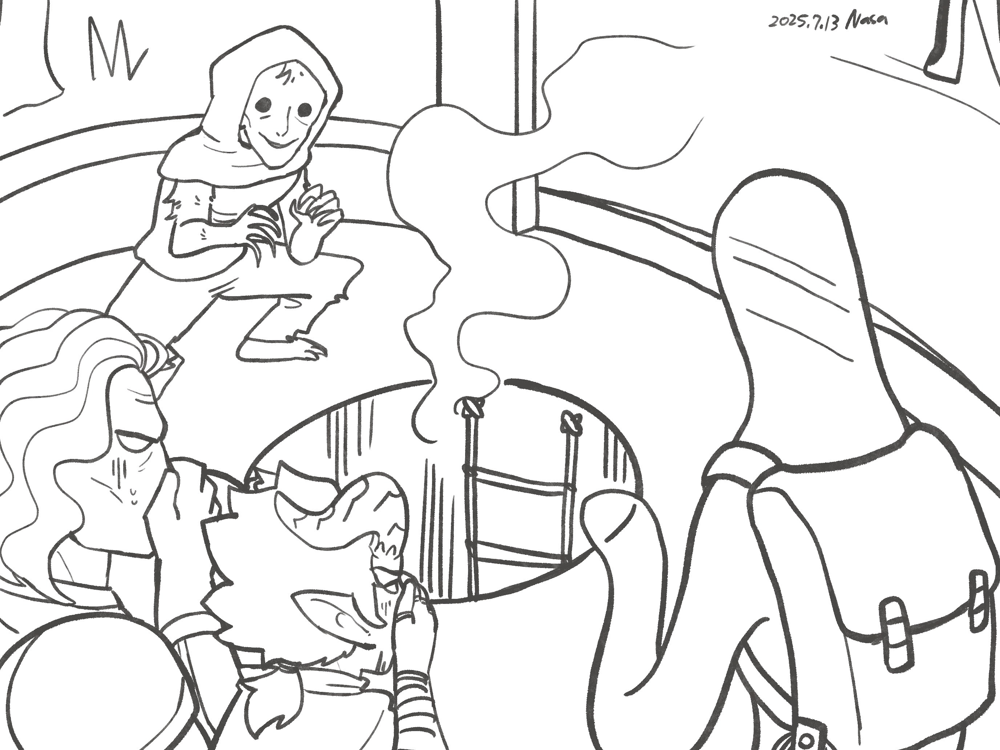

Chapter 1: Call of Fenadra
Seats of the Eclipse


Seats of the Eclipse
15051.10.15
羅特、烏波、賽柏和GoR花了一個月左右的時間，從覆羽莊園，單純依著烏波的直覺，往他的出生地前進。而在抵達的前一晚，GoR守夜時不留下任何消息地消失了。眼看目的地只需要不到一天的路程，羅特和賽柏決定繼續跟隨著烏波前進。
雖然他們依然不知道自己為何要往這地方去，但他們知道必須要阻止烏波因為衝動幹下什麼蠢事。對月神芬尼爾越加厭惡的羅特，也只能在深夜時，透過在覆羽莊園撿到的面具試圖和愛神阿莫雷溝通。他也決心再一次相信自己的決定，與阿莫雷簽下了契約，成為了祂的契術師。另一方面，烏波在夢中接收到了月神芬尼爾的神諭，除了學習了新的力量外，在使用新的力量時，也展現了不同的樣貌。
在這個被稱為雅洛斯（雅洛斯）的地區，烏波終於看見了那座宗祠：當年他第一次與世界接觸的地方，也就是他的出生地。但如今破敗的小小宗祠，此刻似乎有個「客人」，鬼鬼祟祟地在裡頭。
冒險者們趨步向前，烏波甚至大聲疾呼，詢問那人的身份。一名披著斗篷，毛髮鬆脫，似人似猴的生物歡喜地看著烏波，直呼歡迎他回家。他自稱名為唐，並逐一與冒險者們確認身份。此時，烏波感到一股清晰明確的直覺，關於他在此出生的記憶：他感覺到，那股記憶似乎不是屬於他的記憶，而是被硬生生植入他腦中的記憶，令他感到古怪。唐聽見冒險者們的介紹後，慌張的警告他們，超過一個音節的名字會讓他們陷入危險之中，因此，羅特、烏波和賽柏分別以蘭、波和潤的單音節名字作為化名。
接著，唐便將宗祠正中央的圓形孔蓋翻開，邀請冒險者們一起爬下這充滿著穢氣的地底世界：他們稱為「斐納札（斐納札）」的地方，也是烏波真正出生的地方。
順著梯子向下，不確定過了多久，唐和冒險者們終於碰觸到了地面。底下雖然光線不如地面，但由魔法點亮的環境，還是個運作機能十分完整的小城鎮。唐在確保冒險者們一切安好後，便說著自己該趕去工作了，和冒險者們道別。
冒險者們不確定自己應該要做什麼，東張西望。這時，突然三聲的鐘聲響起，眼看所有居民都雙膝落地，賽柏和烏波也應聲跪下，羅特趕緊也跪了下來：雖然不知道賽柏和烏波為何如此自動地跟隨，羅特不想當特別突出不一樣的人，也只好跟著做了。接著，當地人們口中開始誦著月神的禱詞，烏波很開心的跟著念著，賽柏和羅特則沒有跟隨。五分鐘後，居民們站了起來，彷彿什麼事都沒發生一樣，繼續忙於他們的工作。
羅特看見居民們清一色穿著白色的衣服，但深淺不一，有的特別深而混濁，像是髒污一般，但也有潔白到快要可以反光的衣著。接著，他看見數名穿著純白鎧甲，疑似衛兵裝束的人，朝著他們走來。
衛兵確認了他們是「外來者」後，便拋給他們一人一件類似的衣服，要他們穿上。這些衣服顏色也是相對混濁的，但頂多就是灰色，稱不上黑色。三名冒險者們乖乖穿上後，被衛兵們喝斥要他們去工作，接著衛兵們就離開了。
冒險者們還摸不著頭緒，決定到處繞一下。羅特看見了一間「溫室」，有些興趣，決定過去看看，卻發現剛才那幾名衛兵正圍在溫室前，而在他們正前方的，有幾名跪在地上發抖的人們。不過更有趣的，在這些衛兵身後，有一大批十來個平民，手拿磚頭，似乎正要襲擊他們。
羅特不確定該怎麼做，於是決定先在附近找個牆邊躲起來，烏波和賽柏則因為距離較遠，只能觀望而已。
一瞬間，一名「反叛者」掄起磚頭，一擊將一名衛兵敲暈，衛兵與平民之間的衝突就此發生。羅特利用地利之便，朝向衛兵偷襲，射了一箭；烏波衝向群眾，將自己的體型變大；賽柏則還在猶豫該怎麼做。衛兵們說著他們眼前的「被懲罰者」因為違反了規則，需要被懲罰，原因是他們怠工，而且他們的判斷依據是這些人衣服的顏色。
「衣服會說話。」
斐納札衛兵
烏波與羅特對這樣的「規定」感到不解，甚至他們也發現衛兵們只是聽命行事：到底規則是誰訂的、為什麼規則這樣合理，他們都不知道。在烏波將衛兵和平民們用他伸長的手隔開後，衝突暫時化解，而大家也都離開了，就好像剛剛什麼都沒發生過一樣。兩名被敲昏在地上的衛兵則被羅特綑綁手腳，被簡單問過話以後也就被冒險者們留在那裡。
羅特還是對溫室挺有興趣的，因此帶著其他冒險者們走了進去。他們看見溫室內主要是種植菇類和其他食用植物。但其中有幾區，似乎種的是觀賞植物。在烏波詢問後，溫室的領班登記了他們的名字，讓他們在這裡工作。但因為他們剛來這裡工作，衣服顏色還很深，只能做最初階的工作：搬土。
冒險者們來到溫室後方，在該區域領班的指揮下，將土一批一批的搬往室內。羅特試圖用魔法偷懶，還被領班喝斥。他們詢問領班今天的目標為何，得到的卻是「搬土到放飯」。
幾個小時後，清脆的鈴聲響起，冒險者們跟隨著其他工人一起走回溫室入口旁，從旁邊的門口走入大餐廳，享用晚餐：一大盆的土和一些乾草。羅特和賽柏吃不下去（賽柏還是忍著把乾草吃了，但是土他真的吃不下去），把他們的份送給了烏波，他們之中唯一享受其中的人。
等大餐廳所有人吃完後，門打開了，大家依序往外走，排成隊伍一起離開。走了好一陣子，他們看見了這裡少數的高樓：好幾棟毫無設計感的方形建築。人們排隊依序走入大樓內。大樓門口的人員登記每個人的名字，並給予他們分別的房號（烏波是3-B、賽柏是3-C，而羅特是4-A）。他們才得知這是他們今晚住宿的宿舍。
烏波和賽柏入住後，決定在賽柏在房間內偷吃完自己攜帶的乾糧後，去四樓找羅特。
當羅特也在他的房內吃乾糧時，敲門聲響起。他聽見了一個陌生的聲音，小心翼翼地開了門。一名看起來有點變異、神經兮兮的青年女子催促著他讓他進房間。羅特不明所以，但還是讓這人進來了。
這名人類自我介紹名為譚・寇爾，但他也特別警告，在這裡只能用單音節的名字。他同時也要求羅特供出自己的全名。譚解釋自己在地面上時是研究月神芬尼爾的學者，為了得到更多資訊，才潛入這裡。但時間久了，自己已經變異到覺得自己再也回不去地面上了。
此時烏波和賽柏也來到了羅特房間，和譚有了簡單的認識。譚和他們解釋了自己遊走在體制外的做法：雖然大家都被要求要工作，但其實沒有上工，也不會有人特別來捉捕他。同時他也解釋了衣服顏色的意義：一開始，大家衣服的顏色都是深色的，隨著累積「對月神的貢獻」，像是認真工作，或是有特別的功績，就能讓自己衣服的顏色變得更白。而譚衣服的顏色可以說是黑到不能再黑了。
突然，譚頓了一下，提醒大家是晚禱的時間了，接著熟悉的重力感來襲。冒險者們不是被重力將膝蓋往地面拉，就是自動自發地跪了下來。譚和烏波熟練地唸出月神的禱詞，羅特則一樣不情願。禱告結束後，譚建議大家都要學會月神的禱詞，不是為了真正的祈禱，而是不要被衛兵抓到任何反抗的把柄。
透過譚，冒險者們得知斐納札分成了六個不同的地區，分別由不同的「議員」統治。而現在他們所處的「心空域（心空域）」正處於一個特別的狀態：「心空席」的議員似乎消失了，但議會刻意封鎖這個消息。對於這個空缺的職位，烏波展現了些許的興趣，譚也表示規則上「人人有機會」，甚至衣服的顏色不影響大家得到這個席位的機會，但據說其他議員們分別有內定的人選。譚透露有個稱為「靈魂議會」的地區，是共屬於議員們的特別區域，可以到這裡找他們（不過他們只有工作時間會在該地區，放飯後都會各自回到他們領導的地區休息）。
譚提醒到，不同區域都會有各自的結界，而心空域因為現在沒有領導者，結界暫時失效了：這對冒險者們來說，是最沒有負擔的。烏波提議明天白天一起往靈魂議會的方向前進，其他冒險者們也同意。
將其他人趕離自己房間後，羅特準備休息，卻也發現他一直收在包包內的芒果鑽破了一個洞，溜走了。他回想起，芒果在他們下到斐納札之前都還在，也表示了他對斐納札的興趣。他推測，芒果很有可能偷偷溜了出去，而這讓他十分不開心。
15051.10.16
一早，羅特在四樓的公共區域準備盥洗，也看見了譚。譚對他眨了一眼，羅特也很清楚知道他們在外面最好不要讓別人知道他們互相認識這件事。整個斐納札給他一種十分不舒服的感覺。
烏波和賽柏一起來到羅特的房間，三人一起走到一樓。他們看見人們走入另一棟大樓，也跟隨進去，用了早餐。比起昨晚在溫室的晚餐，這餐是麵包，讓羅特和賽柏放心多了。賽柏將麵包裝進背包內，他剛才在房間內已經先吃了乾糧，以免早餐還得吃土和乾草。
用完早餐後，人們排隊走出，紛紛往工作區域前進，冒險者們則脫隊，沿路詢問其他路人，得知要往靈魂議會，得往北方走。
突然，走在最前面的羅特感到腳步一沉。他想起昨晚譚講到的不同地區結界一事。他們踏入了「不動域（不動域）」，腳步變得沉重而緩慢，手也變得難以使力。
不過，左手邊在心空域與不動域的邊界，有個工廠般的地方引起了他們的注意。冒險者們走了過去，看見兩名衛兵守衛著。經過一番交涉，烏波卸下了裝束，被允許進去裡面，但羅特和賽柏則不被允許入內，原因為「這是上頭的意思」，讓他們感到不解。
走入這座工廠，烏波看見了看起來十分有設計感的櫃檯，裡面的人對他的表情都十分不自然，但也沒多說什麼。在櫃檯的允許下，他走入了後方的門內。左右手邊各有三扇門，裡面有躺在手術台上的小型電漿人、倉庫間、會議室等。最後，烏波走入了正前方的雙開門。
映入眼簾的，是左右側分別數十個巨型的培養箱，裡頭的竟然是與烏波極為相似的電漿人，在培養液中載浮載沉。
而在走道的正中間是一座雕像。一名雙翼展開的天使人，雙手撫在胸前，遮掩著他已被挖空的心。
15051.10.15
Lott, Ubbo, Psyber and GoR spent about a month traveling from Feathered Estate to his birthplace simply following Ubbo's intuition. And the night before arrival, GoR disappeared without leaving any message during the vigil. Seeing that the destination was less than a day away, Lott and Psyber decided to continue following Ubbo.
Although they still didn't know why they went to this place, they knew they had to stop Ubbo from doing something stupid out of impulse. Lott, who became increasingly disgusted with Phyneal, the moon god, could only try to communicate with Amoret, the god of love, through the mask he picked up in Feathered Estate late at night. Determined to believe in his decision once again, he signed a contract with Amoret and became his Pactmaster. On the other hand, Ubbo received the oracle from the moon god Phyneal in his dream. In addition to learning new powers, he also showed a different appearance when using the new powers.
In this area called Yarros (Yarros), Ubbo finally saw the ancestral hall: the place where he first came into contact with the world, which was also his birthplace. But in the now dilapidated little ancestral hall, there seems to be a "guest" sneaking inside.
The adventurers moved forward, and Ubbo even shouted loudly, asking for the man's identity. A cloaked, loose-haired, human-like, monkey-like creature looked at Ubbo happily and welcomed him home. He called himself 唐 and confirmed his identity with the adventurers one by one. At this time, Ubbo felt a clear intuition about the memory of his birth here: He felt that the memory did not seem to belong to him, but was a memory that was forcibly implanted in his mind, which made him feel weird. After hearing the adventurers' introduction, 唐 panicked and warned them that names with more than one syllable would put them in danger. Therefore, Lott, Ubbo, and Psyber used the monosyllable names of 蘭, 波, and 潤 as aliases respectively.
Then, 唐 opened the circular hole cover in the center of the ancestral hall and invited the adventurers to climb down into this filthy underground world: the place they called "Fenadra (Fenadra)" was also the place where Ubbo was truly born.
Going down the ladder, not sure how long it took, 唐 and the adventurers finally touched the ground. Although the light below is not as good as on the ground, the environment lit by magic is still a small town with complete functions. After making sure that the adventurers were all well, 唐 said it was time to go to work and said goodbye to the adventurers.
The adventurers were not sure what they should do and looked around. At this time, three bells suddenly rang, and all the residents fell to their knees. Psyber and Ubbo also knelt down in response. Lott quickly knelt down as well: Although I don't know why Psyber and Ubbo followed so automatically, Lott didn't want to be the one who stood out, so he had to follow suit. Then, the local people began to chant the prayers of the Moon God. Ubbo followed happily, but Psyber and Lott did not follow. Five minutes later, the residents stood up and continued about their work as if nothing had happened.
Lott I saw that the residents were all wearing white clothes, but they were of different shades. Some were extremely dark and turbid, as if they were dirty, but there were also clothes that were so white that they were almost reflective. Then, he saw several people wearing pure white armor, suspiciously like guards, walking towards them.
After the guards confirmed that they were "outsiders", they gave each of them a similar piece of clothing and asked them to put it on. The color of these clothes is also relatively turbid, but they are gray at best and cannot be called black. After the three adventurers put them on obediently, the guards yelled at them to go to work, and then the guards left.
The adventurers were still confused and decided to look around. Lott saw a "greenhouse" and was somewhat interested. He decided to go over and take a look, only to find that the guards just now were surrounding the greenhouse, and directly in front of them were several people kneeling on the ground trembling. But what's more interesting is that behind these guards, there is a group of about ten civilians holding bricks, seemingly about to attack them.
Lott was not sure what to do, so he decided to hide near a wall first. Ubbo and Psyber could only wait and watch because they were far away.
In an instant, a "rebel" picked up a brick and knocked a guard unconscious with one blow, and a conflict broke out between the guards and civilians. Lott took advantage of the convenient location to sneak attack on the guard and shot an arrow; Ubbo rushed towards the crowd and increased his size; Psyber was still hesitating on what to do. The guards said that the "punished people" in front of them had broken the rules and needed to be punished because they were slacking off in their work, and their judgment was based on the color of these people's clothes.
"Clothes can talk."
Fenadra Guards
Ubbo and Lott were puzzled by such "rules". They even found that the guards were just following orders: they didn't know who made the rules and why they were so reasonable. After Ubbo separated the guards and civilians with his outstretched hand, the conflict was temporarily resolved, and everyone left as if nothing had happened. The two guards who were knocked unconscious were tied up hand and foot by Lott. After being briefly questioned, they were left there by the adventurers.
Lott was still very interested in the greenhouse, so he led the other adventurers in. They saw that mushrooms and other edible plants were mainly grown in the greenhouse. But there are several areas that seem to be planted with ornamental plants. After Ubbo inquired, the greenhouse foreman registered their names and allowed them to work here. But because they had just come here to work, their clothes were still very dark and they could only do the most basic work: moving soil.
The adventurers came to the back of the greenhouse and, under the command of the area foreman, moved the soil indoors one by one. Lott tried to use magic to be lazy and was scolded by the foreman. They asked the foreman what their goal was today, but what they got was "moving soil until putting food on the table."
A few hours later, the crisp bell rang, and the adventurers followed other workers back to the greenhouse entrance, walked into the large dining room from the side door, and had dinner: a large pot of soil and some hay. Lott and Psyber couldn't eat any more (Psyber still managed to eat the hay, but he really couldn't eat it), so they gave their portion to Ubbo, the only one among them who enjoyed it.
After everyone in the big restaurant finished eating, the door opened and everyone walked out in order and lined up to leave together. After walking for a while, they saw a few tall buildings here: several square buildings with no sense of design. People lined up to enter the building. The person at the building door registers each person's name and gives them their respective room numbers (Ubbo is 3-B, Psyber is 3-C, and Lott is 4-A). They learned that this was the dormitory where they would stay tonight.
After Ubbo and Psyber checked in, they decided to go to the fourth floor to find Lott after Psyber secretly ate the dry food he brought with him in the room.
While Lott was also eating dry food in his room, there was a knock on the door. He heard an unfamiliar voice and opened the door cautiously. A young woman who looked a little mutated and nervous urged him into the room. Lott didn't know why, but let this person in anyway.
This human introduced himself as Tam Quorr, but he also warned that only monosyllabic names could be used here. He also asked Lott to reveal his full name. Tam explained that he was a scholar studying the moon god Phyneal when he was on the ground, and he sneaked here in order to get more information. But as time passed, I had mutated to the point where I felt I could never return to the ground.
At this time, Ubbo and Psyber also came to Lott's room and got to know Tam briefly. Tam explained to them his way of living outside the system: although everyone was required to work, he actually didn't work, and no one would come to catch him. At the same time, he also explained the meaning of the color of clothes: In the beginning, everyone's clothes are dark in color. As they accumulate "contribution to the moon god", such as working hard or having special achievements, the color of their clothes can become whiter. And the color of Tam's clothes can be said to be as dark as possible.
Suddenly, Tam paused to remind everyone that it was time for vespers, and then the familiar feeling of gravity hit. The adventurers either had their knees pulled toward the ground by gravity, or they knelt down automatically. Tam and Ubbo recited the Lunar Prayer skillfully, Lott just as reluctantly. After the prayer, Tam suggested that everyone should learn the Lunar Prayer, not to actually pray, but so as not to be caught by the guards in any way to resist.
Through Tam, the adventurers learned that Fenadra was divided into six different regions, each ruled by different "members". And now the "Realm of Hollow Heart" they are in is in a special state: the members of the "Realm of Hollow Heart" seem to have disappeared, but the parliament deliberately blocked the news. Ubbo has shown some interest in this vacant position. Tam also said that according to the rules, "everyone has a chance." Even the color of clothes does not affect everyone's chance of getting this seat. However, it is said that other members of Congress have their own nominees. Tam revealed that there is an area called the "Soul Parliament", which is a special area belonging to the councilors. You can find them here (but they will only be in the area during working hours, and after meals, they will go back to the area they lead to rest).
Tam reminded that different areas will have their own barriers, and since there is no leader in the Heart Space Zone, the barrier is temporarily ineffective: this is the least burdensome for adventurers. Ubbo proposed that we go to the Soul Council together during the day tomorrow, and the other adventurers also agreed.
After driving the others out of his room, Lott was about to rest, but he also found that Mango, which he had kept in his bag, had broken a hole and slipped away. He recalled that Mango was still there before they downloaded Fenadra, and expressed his interest in Fenadra. He speculated that Mango might have sneaked out, which made him very unhappy.
15051.10.16
Early in the morning, Lott was preparing to take a shower in the public area on the fourth floor and saw Tam. Tam winked at him, and Lott knew very well that it would be best if they didn't let anyone know that they knew each other outside. The whole Fenadra gave him a very uncomfortable feeling.
Ubbo and Psyber came to Lott's room together, and the three of them walked to the first floor together. They saw people going into another building, followed them, and had breakfast. Compared to last night's dinner in the greenhouse, this meal was bread, which made Lott and Psyber much more relieved. Psyber packed the bread into his backpack. He had already eaten dry food in the room just now to avoid having to eat dirt and hay for breakfast.
After breakfast, people lined up and walked out, heading towards the work area. The adventurers left the queue and asked other passers-by along the way. They learned that they had to go north to go to the Soul Council.
Suddenly, Lott, who was walking at the front, felt his footsteps sink. He remembered what Tam had said last night about enchantments in different areas. They entered the "Realm of Motionless", their steps became heavy and slow, and their hands became difficult to use.
However, on the left hand side, at the boundary between the Heart Space Domain and the Immovable Domain, there was a factory-like place that caught their attention. The adventurers walked over and saw two guards guarding the place. After some negotiation, Ubbo took off his costume and was allowed to go inside, but Lott and Psyber were not allowed in because "this is what the superiors meant", which puzzled them.
Walking into this factory, Ubbo saw a counter that looked very designed. The people inside looked very unnatural towards him, but they didn't say much. With the permission of the counter, he walked into the rear door. There are three doors on the left and right, which contain a small plasma man lying on the operating table, a warehouse, a conference room, etc. Finally, Ubbo walked through the double doors directly ahead.
What came into view were dozens of giant incubators on the left and right sides. Inside were plasma figures very similar to Ubbo, floating and sinking in the culture fluid.
And in the middle of the aisle is a statue. An angel with wings spread out, hands on his chest, covering his hollowed-out heart.